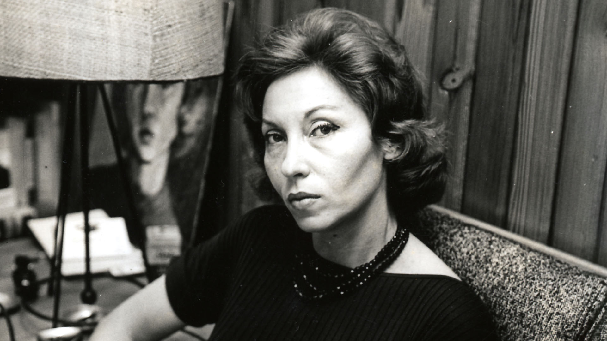

Clarice Lispector
The woman who once wroted "the greatest noveal a woman has ever written in the Portuguese language".

Clarice Lipsector
Clarice Lispector's Timeline
- 1920 - Clarice Lispector is born Chaya Lispector in Chechelnyk, Podolia, today's Ukraine.
- 1922 - She arrive whith her family in Brazil, escaping from Jewish pogroms that were taking place in parts of the Russian Empire.
- 1930 - with the age of 9, she losts her mother, who died from syphilis.
- 1932 - Clarice gained admission to the Ginasio Pernambucano, the most pretigious secondary school in the state by then.
- 1935 - she moves with he family to Rio de Janeiro, then-capital of Brazil.
- 1937 - she entered the Law School of University of Brasil, then one of the most prestigious institutions of higher learning in the country.
- 1940 - the magazine Pan publishes her first know story, "Triunfo".
- 1942 - she is granted Brazilian citizenship; eleven days later she got married with Maury Gurgel Valente.
- 1943 - her first novel, Near to the Wild Heart, is published.
- 1944 - her book won the prestigious Garça Aranha Prize for the best debut novel of 1943.
- 1948 - her first son, Pedro, was born in Bern, Switzerland.
- 1952 - the family moved to Washington, D. C.
- 1953 - her second son, Paulo, is born.
- 1959 - missing her sisters and Brazil, she left her husband and returned with her sons to Rio de Janeiro.
- 1961 - The Apple in the Dark is published.
- 1962 - her work is awarded with the Carmen Dolores Barbosa Prize for the best previous year's novel.
- 1964 - she published one of her most shocking and famous books, A paixão segund G. H..
- 1966 - after taking a sleeping pill, she fell asleep in her bed with a lit cigarette, leading to a terrible accident where she was badly injured.
- 1967 - she began writing a weekly column for the Jornal do Brasil, an important Rio newspaper.
- 1975 - she was invited to the First World Congress of Sorcery in Bogotá, an event which garnered wide press coverage and increased her notoriety.
- 1977 - she publishes her last and perhaps most famous novel, The Hour of the Start.
- 1977 - shortly after The Hour of the Star was published, Lispector was admitted to the hospital. She had inoperable ovarian cancer, though she was not told the diagnosis. She died on the eve of her 57th birthday and was buried on December 11, 1977, at the Jewish Cemetery of Caju, Rio de Janeiro.